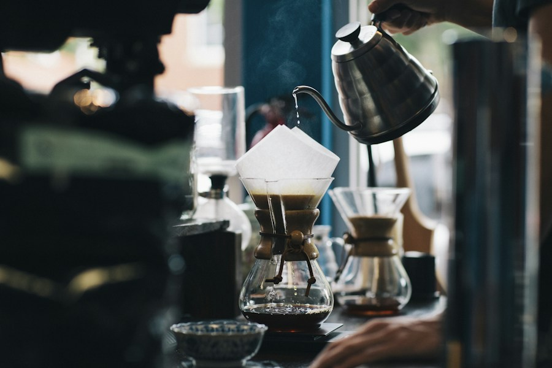
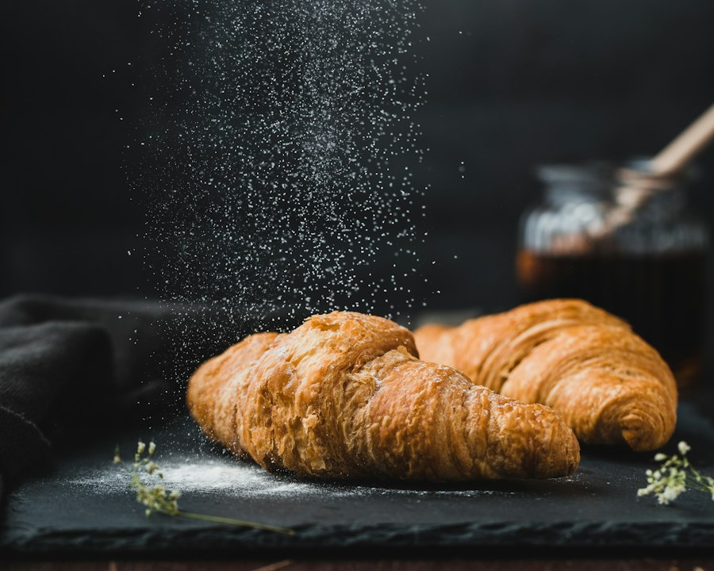

PULL UP A CHAIRSome places just
Some places just
feel like home.
We believe the best things happen around a table. The catch-ups that turn into afternoons. The first sip of a really good coffee. The last piece of bread, shared.
Ember & Oak is our love letter to all of it. Honest food, a warm welcome, and a little space to slow down.
Find your new favorite corner ↗